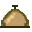

| RUP on developerWorks |
 |
|
|
developerWorks: Rational is the technical resource for the community of development professionals using or evaluating IBM Rational tools and best practices. developerWorks: Rational offers a variety of downloads, resources, discussion groups, and education designed to help you utilize IBM Rational solutions to best advantage. Whether learning about the IBM Rational solution for the first time, or a veteran practitioner, you'll find the technical content you need to get started quickly and enhance your skills. developerWorks: Rational is part of the larger IBM developerWorks® Web site that covers technical information on Rational, WebSphere, DB2, Tivoli and Lotus as well as open standards technology including Java, Linux, XML, Web services, Wireless, emerging technologies and more. Visit the RUP section of the developerWorks®: Rational® Web site to access technical articles and case studies to help you adopt and implement RUP, example artifacts, community resources such as a RUP discussion forum, and more. In addition, the RUP section of the developerWorks®: Rational® Web site is the repository for accessing RUP Plug-Ins. Guidance on using and creating Plug-Ins is also provided. The Plug-Ins extend RUP and add process guidance specific to a technology, tool, platform or domain, providing more support for process tailoring. |
© Copyright IBM Corp. 1987, 2006. All Rights Reserved. |